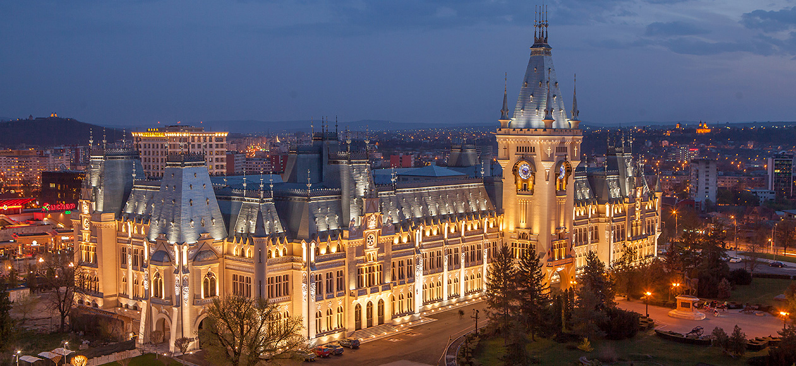

IASI
Cuprins
Iași este municipiul de reședință al județului cu același nume, Moldova, România. Iașiul a fost capitala Moldovei în perioada 1564-1859, una dintre cele două capitale ale Principatelor Unite între 1859 și 1862 și capitala Regatului României între 1916 și 1918 (în perioada Primului Război Mondial, atunci când Bucureștiul s-a aflat sub ocupație germană).
La recensământul din 2011, municipiul Iași avea o populație de 290.422 și era al patrulea oraș ca mărime din România. În anul 2018, numărul de locuitori a crescut la 371.889, municipiul clasându-se pe locul doi în România. Populația Iașiului are o creștere constantă de la an la an datorită oportunităților economice și financiare. Conform Eurostat, cu o populație de 474.035 locuitori (în 2015), zona metropolitană Iași este a doua ca mărime din România (după București).
Municipiul Iași se află în partea de est a Moldovei, în Câmpia Moldovei, fiind așezat în calea vechilor drumuri comerciale care legau nordul și vestul Europei de sud-estul continental și de Orientul Apropiat. Orașul se află pe râul Bahlui, un afluent al Jijiei, care se varsă în râul Prut. În perioada medievală Târgul Ieșilor se afla situat pe una dintre cele mai importante artere comerciale din zonă, respectiv pe axa Lvov (Polonia) - Constantinopol, cel mai important oraș din acea perioadă. Situarea pe această axă a ajutat la dezvoltarea sa, deoarece pe aici treceau toți comercianții spre și dinspre Constantinopol
Prin extinderea lui, Iașiul este legendara urbe a celor 7 coline
, comparat în 1691 de italianul Marco Bandini ca fiind O nouă Romă
. Cele șapte coline sunt Cetățuia, Galata, Copou, Bucium-Păun, Șorogari, Repedea și Breazu, cu altitudini variind între 50 m în Lunca Bahluiului și 400 m pe Dealul Păun și Dealul Repedea. Principalele coline sunt Copou, Cetățuia, Tătărași și Galata. Orașul mai este traversat de râul Nicolina, râul Bahlui și de pârâul Șorogari (numit în evul mediu Cacaina, deoarece aici se aruncau gunoaiele); la răsărit de oraș, curge pârâul Ciric, pe care sunt create artificial trei lacuri cu scop de agrement.
Cercetările arheologice au dus descoperirea unor amfore romane în strada Ciurchi, în zona viilor din Copou și la câțiva km de Iași, la Holboca. De asemenea, s-au descoperit monede imperiale romane lângă Dealul Cetățuia. La Valea Lupului (lângă Antibiotice SA) s-au descoperit morminte sarmatice, vase dacice și obiecte de podoabă. Din perioada de trecere spre feudalism s-au identificat pe teritoriul Iașiului, 19 așezări cu resturi de locuire din sec. IV, neîntărite. Locuințele erau colibe de suprafață și bordeie.
Din secolele VII-X s-au descoperit locuințe rectangulare prevăzute cu cuptoare în formă de potcoavă precum și numeroase unelte, piese de veșminte și podoabe, încadrate în cultura de tip Dridu. Din secolele X-XI s-a descoperit o ceramică cu elemente de tehnică și forme specifice Moldovei de nord.
a arătat că în 1238, tătarii determină exodul a aproape 10.000 de alani în Moldova. Alanii (iașii) se stabilesc în zona în care va fi menționat orașul Iași. Între 1299-1302, majoritatea alanilor părăsesc Moldova și trec în Imperiul Bizantin.
Din aceste date rezultă că Iașiul a fost în antichitate un sat care s-a dezvoltat ajungând prin secolele VII-X un mic târg cu locuințe dreptunghiulare care a crescut o dată cu venirea triburilor iașilor (alani) în secolul al XIII-lea. Târgul Iașilor a fost ocupat în timp de pecenegi, cumani, alani și tătari.
Orașul Iași a fost menționat pentru prima oară într-un privilegiu comercial (acordat negustorilor din Liov), emis în Deoarece existau clădiri mai vechi de această dată (spre exemplu presupusa Biserică armeană construită în), se crede că orașul este mult mai vechi, cel puțin cu câteva decenii înainte de această dată, fapt dovedit și de zidurile Curții Domnești.
În 1564, domnitorul Alexandru Lăpușneanu a mutat aici capitala Moldovei de la Suceava. Schimbarea statutului dintr-un simplu târg , în cel de curte domnească în sec. XV și apoi in capitală în sec. XVI, duce la dezvoltarea accelerată a a orașului, prin atragerea de mesteșugari, negustori, cei mai mulți dintre ei străini. Astfel un misionar catolic, Remond, găsește în 1636 la Iași armeni, unguri, polonezi, dar și francezi și venețieni. O perioadă de intensă înflorire a vieții economice, comerciale și culturale se înregistrează în sec. XVII, în timpul domniei lui Vasile Lupu. În 1640, Vasile Lupu a înființat aici prima școală în limba română și o tipografie în biserica Trei Ierarhi. În 1643, prima carte tipărită în Moldova a apărut la Iași.
Palatul Ocârmuirii din Iași în timpul unei procesiuni militare. Litografie de epocă
Orașul a fost incendiat de mai multe ori, de tătari în 1513, de otomani în 1538, de cazaci în 1650 și de polonezi în 1686. Unul din cele mai dramatice momente pentru oraș a fost distrugerea din 1650, când cazacii și tătarii au atacat Moldova, răspunzând refuzului lui Vasile Lupu de a-și căsători fiica cu Timuș Hmelnițki. Miron Costin ne spune că au ars atunce tot orașu
, curtea fiind abandonată de dărăbanii (ostași pedeștri) lăsați de domn pentru pază. Singura salvare a locuitorilor erau Codrii Iașilor, din apropiere.
După jaful și incendiul din 1650, orașul trece printr-un alt mare incendiu, provocat de polonezi în 1686. Oamenii se ascundeau prin mănăstiri, singurele locuri fortificate din oraș, alături de curte, însă chiar și așa nu scăpau de foc sau de pericolul robiei.
În 1734, orașul a fost afectat de o epidemie de ciumă.
Prin Pacea de la Iași, cel de-al șaselea război ruso-turc a luat sfârșit în 1792. În 1822, turcii au luat cu asalt orașul, pentru a potoli revoluționarii reci ai Eteriei, conduși de Alexandru Ipsilanti.
Între 1565 și 1859, orașul a fost capitala Moldovei, apoi, între 1859 și 1862, atât Iași cât și București au fost capitalele de facto ale Principatelor Unite ale Moldovei și Valahiei. În 1862, când uniunea celor două principate a devenit deplină sub numele de România, capitala țării a fost stabilită la București.
La sfârșitul secolului al XIX-lea, orașul era reședința județului Iași și avea o populație de 59.427 de locuitori. În timpul primului război mondial, pentru doi ani, autoritățile române și familia regală s-au refugiat la Iași, timp în care orașul a fost capitala României neocupate, după ce Bucureștiul a căzut în mâinile Puterilor Centrale la 6 decembrie 1916. Administrația și familia regală au revenit la București în noiembrie 1918.
Al Doilea Război Mondial a reprezentat o perioadă neagră în istoria ieșeană. La cinci zile de la intrarea României în război, Antonescu a declanșat, cu concursul autorităților publice locale, Pogromul de la Iași din 27-29 iunie 1941 împotriva cetățenilor români de etnie evreiască. În conformitate cu datele prezentate de autoritățile române, în cele trei zile de pogrom, continuat cu victimele „trenurilor morții” au fost uciși 13.266 de evrei. Acest pogrom a fost unul dintre cele mai grave evenimente de acest fel din lume. Cele două morminte comune ale victimelor pogromului, aflate în cimitirul evreiesc din oraș, sunt o mărturie veșnică a acestui masacru.
În mai 1944, orașul a fost scena unor lupte grele între armatele româno-germane și Armata roșie și o mare parte din zona istorică a orașului a fost distrusă. La 21 august 1944, Iașiul a fost ocupat de forțele sovietice.
În perioada postbelică orașul a continuat să se dezvolte, construindu-se noi cartiere și întreprinderi industriale, continuând să fie un important centru universitar.
Viața culturală
Odată cu stabilirea capitalei Moldovei la Iași, acesta cunoaște o dezvoltare accelerată pe toate planurile, urban, comercial și cultural. Astfel în secolul al XVI-lea, Despot Vodă inaugurează în Iași "Școala latină de la Cotnari", instituție care a promovat studiile de latină nu numai în Iași și în întreaga Moldovă, ci în întreg spațiul românesc.
În anul 1641 la Iași se înființează Academia Vasiliană
și prima tipografie din Moldova, în timpul domniei lui Vasile Lupu (1634 - 1653). In anul 1646 Mitropolitul Varlaam publică la Iași Cazania
sau Carte românească de învățătură
. Tot în acest an apare primul cod de legi în limba română.
La 18 martie 1833, la Iași s-a înființat prima societate științifică românească și anume Societatea de Medici și Naturaliști. Sediul acesteia este în casa Roset, clădirea în care se găsește și Muzeul de Istorie Naturală din Iași, muzeu înființat în 1834.
În anul 1835 la Iași este înființată „Academia Mihăileană", în anul 1836 se înființează Conservatorul Filarmonic Dramatic din Iași, iar în anul 1860 este nființată Universitatea Al. I. Cuza
. Celebra tragediană Agatha Bârsescu a fost una din profesoarele de la Conservatorul din Iași.
În anul 1863 este constituită Societatea cultural-literară „Junimea", în cadrul căreia s-au afirmat cele mai mari personalități ale culturii românești: Mihai Eminescu, Titu Maiorescu, Costache Negruzzi, Ion Creangă, AD Xenopol, Vasile Alecsandri, Ioan Slavici, Ion Luca Caragiale și alții.
În continuare Iașiul cunoaște o viață literară efervescentă, prin scriitorii care au trăit și au creat aici. Străzile orașului au fost străbătute de nume strălucite ale culturii românești cum sunt Mihai Eminescu, Ion Creangă, Titu Maiorescu, Costache Negruzzi, Ionel Teodoreanu, Otilia Cazimir, George Topârceanu, Nicolae Gane, Mihai Codreanu și alții. Aici a trăit o mare parte a vieții Mihai Sadoveanu și a compus o parte din opera sa, în „castelul din Copou”.
Viața teatrală cunoște și ea o dezvoltare puternică. După primul spectacol în limba română dat de Gheorghe Asachi în casele boierului Ghica, spectacolele trupelor străine (italiene, franceze, rusești) se dădeau în săli special amenajate. În 1832, o altă trupă franțuzească de comedii și vodeviluri sosește în Iași sub direcția a doi frați Fouraux și preface în teatru casa doctorului Peretz din strada Goliei. Sala de teatru activa sub firma „Théâtre de varieté”. Pe scena acestui teatru, în 10 aprilie 1834, Gheorghe Asachi a organizat spectacolul în limba română intitulat „Serbarea păstorilor moldoveni”, în care „actorii” erau Gheorghe Asachi, Vasile Alecsandri, Matei Millo, Mihail Kogălniceanu, Al. Mavrocordat, N. Docan, Scarlat Vărnav și alți fii de boieri. În anul 1840 se înființează Teatrul Național, sub direcțiunea lui Costache Negruzzi, Vasile Alecsandri și Mihail Kogălniceanu, conducerea trupei românești fiind asigurată de Costache Caragiali. Teatrul Național a funcționat din 22 decembrie 1846 în noua sală a Teatrului cel Mare de la Copou. Aici se joacă „Baba Hârca", prima opereta românească, muzica semnată de A. Flechtenmacher, Matei Millo interpretând rolul principal, fiind și primul actor român care încearcă travestiul. Obține un triumf cum nu se mai pomenise pe scena ieșeană până atunci. Costumul este păstrat și astăzi la Muzeul Mihai Eminescu din Iași. Din numele mari care au jucat în trecut pe scenele teatrelor din Iași, se remarcă Matei Millo, Maria Filotti, Miluță Gheorghiu (inegalabil în rolul Chiriței), iar în zilele noastre Tamara Buciuceanu Botez, Draga Olteanu Matei, au urcat pe scena ieșeană pentru a da viață rolului Chiriței.
În noaptea de 17 spre 18 februarie 1888, în urma unui incendiu devastator, clădirea Teatrului de la Copou este distrusă. Demersurile pentru construirea unui nou local de teatru au durat până în 1894 când este aprobat contractul cu arhitecții vienezi Fellner și Helmer și a fost construită actuala clădire a teatrului, considerată a doua cea mai frumoasa cladire din lume a unui teatru, conform unui top întocmit de televiziunea BBC, realizat cu ocazia „Zilei mondiale a teatrului".
În anul 2012, orașul și-a depus candidatura pentru a deveni Capitală Culturală Europeană în 2021, competiție câștigată de Timișoara, iar pentru a-și susține candidatura, a fost ales sloganul Iași 2021-lnterfața răsăriteană a culturii europene, bazându-se în acest sens, pe relațiile culturale transfrontaliere cu Cernăuțiul și Chișinăul. Din anul 2013, pentru a putea intra în competiție, a fost organizat Festivalul Internațional al Educației (din luna mai) sau FILIT (în luna octombrie) care reunește scriitori renumiți din întreaga lume.
Obiective turistice

Text preluat de pe WIKIPEDIA®